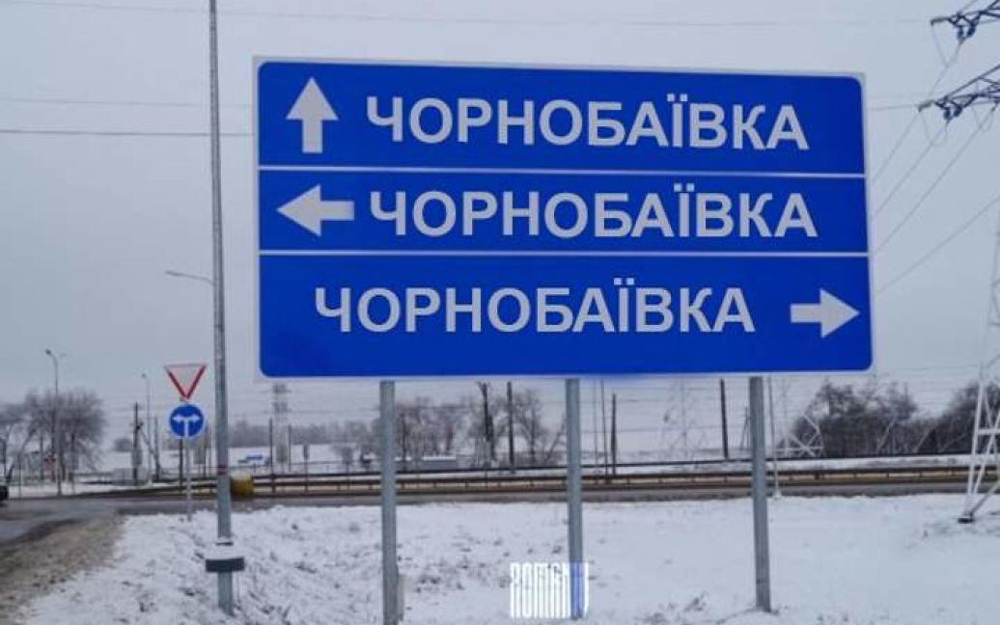
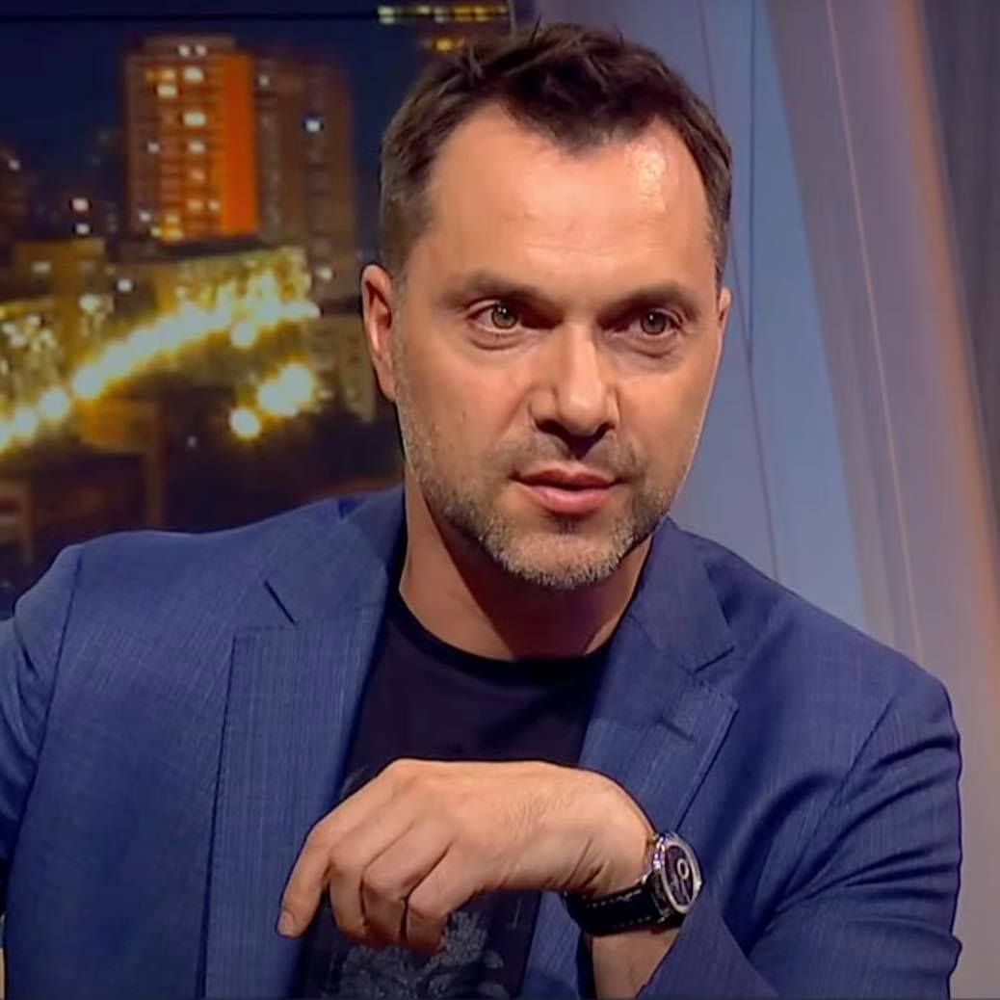

"Було яскраво": ЗСУ вдев'яте вдарили по окупантах в Чорнобаївці

Дев'ята серія серіалу "Чорнобаївка".
Збройні сили України вночі 23 березня вдев'яте вдарили по аеропорту в Чорнобаївці на Херсонщині, де російські окупанти зберігають свою військову техніку.
Про це повідомив радник президента України Олексій Арестович.
"Сьогодні вночі їх крили з невеликими перервами години зо три. Чергові РСЗВ Смерч, які били Миколаєвом, сьогодні мовчали. Ймовірно, ця партія замовкла назавжди. Боєкомплект до них знищено, було яскраво. Завдяки значним запасам цього самого бк, концерт був із чудовим підсвічуванням та безліччю загорянь", - написав він.
Арестович зазначив, що російської техніки на аеродромі вже набагато менше, більшість пошкоджена від розривів боєприпасів.
"Повною мірою можна стверджувати про успішний вихід чергової, 9-ї серії серіалу "Чорнобаївка", - додав він.
Читайте також: